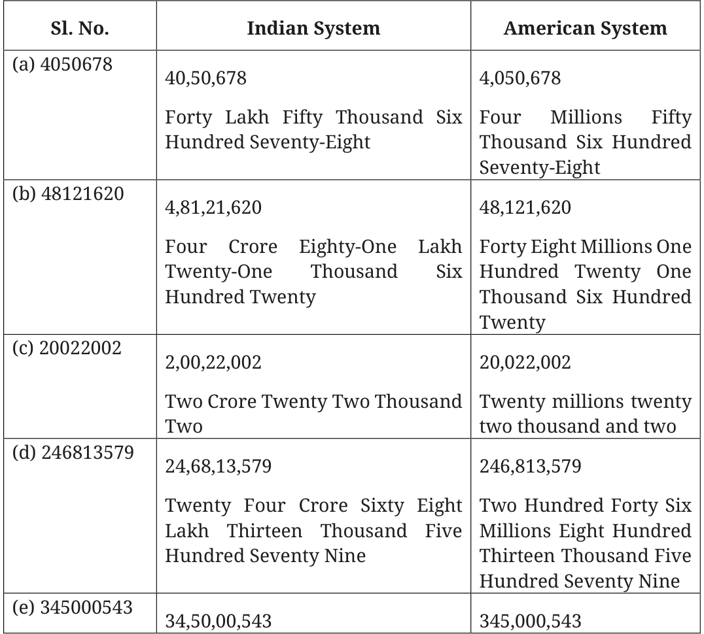
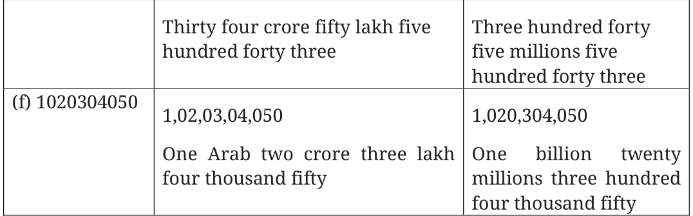
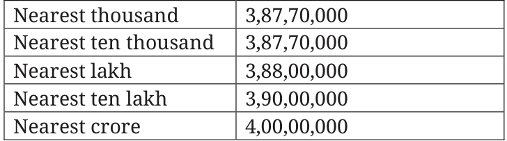
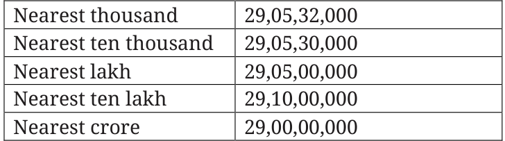

- 2.Do you see any connection between each number and the
corresponding smallest number of button clicks?
Ans: The smallest number of buttons click for each number is the sum of
its digit.
Page No. 8
How many zeros does a thousand lakh have? 8 zeros How many zeros does a hundred thousand have? 5 zeros
Page No. 9 Figure it out
- 1.Read the numbers and write their number names in both the Indian
and American systems:


- 2.Write the following numbers in Indian place value notation:
(a)One crore one lakh one thousand Ten
Ans: 1,01,01,010
(b)One billion one million one thousand one
Ans: 1,00,10,01,001
- (c)Ten crore twenty lakh thirty thousand forty
Ans: 10,20,30,040
(d)Nine billion eighty million seven hundred thousand six hundred
Ans: 9,08,07,00,600
- 3.Compare and write ‘<’, ‘>’ or ‘=’:
- (a)30 thousand __<__ 3 lakhs
- (b)500 lakhs ___>___ 5 million
- (c)800 thousand __<__ 8 million
- (d)640 crore ___<___ 60 billion
Page No. 10
Think and share situations where it is appropriate to (a) round up,
- (b)round down, (c) either rounding up or rounding down is okay
and (d) when exact numbers are needed.
Ans:
- (a)Buying food/fruits for a group.
- (b)Estimating time remaining to leave for the school (catching the
school bus).
- (c)Distance estimation between places, especially far off places.
- (d)Handling money in banks.
Find more such situations.
Page No. 11
Similarly, write the five nearest neighbours for these numbers:
- (a)3,87,69,957

- (b)29,05,32,481

Page No. 13
From the information given in the table answer the following
questions by approximation: (Refer table on P. \(12 - 13\)
- 1.What is your general observation about this data? Share with the
class.
Ans: One of the observations is - Most cities shown in the table have seen a significant rise in population from 2001 to 2011. Think of more observations.
- 2.What is an appropriate title for the above table?
Ans: Population of some Indian cities in 2001 and 2011.
- 3.How much is the population of Pune in 2011? Approximately, by how
much has it increased compared to 2001?
Ans: Population of Pune in 2011 is 31,15,431. The population of Pune has approximately increased by 6 lakh.
- 4.Which city’s population increased the most between 2001 and -2011?
Ans: Bengaluru has shown maximum increase in population which is
41,24,644.
- 5.Are there cities whose population has almost doubled? Which are
they?
Ans: Yes, they are Bengaluru, Hyderabad, Surat and Vadodara
- 6.By what number should we multiply Patna’s population to get a
number/population close to that of Mumbai?
Ans: We need to multiply Patna’s population by 7.39 to get a number close to the population of Mumbai.
Page No. 14 Using the meaning of multiplication and division, can you explain why multiplying by 5 is the same as dividing by 2 and multiplying by 10?
Ans: \(10 \div 2\) is the same as 5.